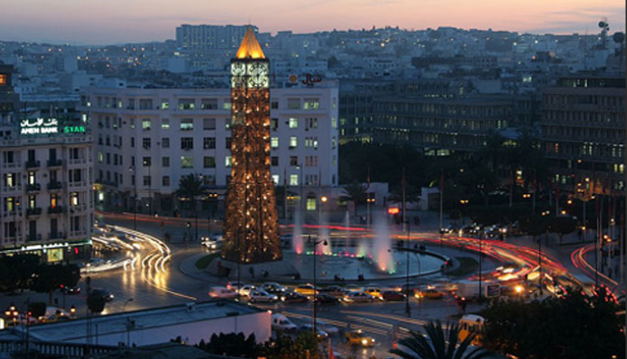
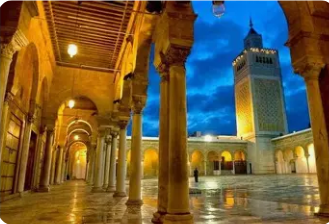
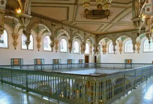
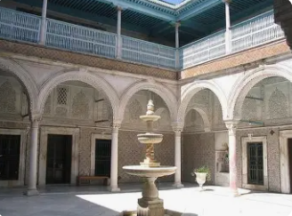

La Capitale du Jasmin

Tunis est la capitale de la Tunisie et le centre politique, économique et culturel du pays. Située au fond du golfe de Tunis, la ville allie harmonieusement tradition millénaire et modernité.
La ville de Tunis, chef-lieu du gouvernorat, est le cœur battant du pays avec ses ministères, ses sièges sociaux, ses théâtres et ses musées prestigieux. Son centre-ville colonial et son avenue Habib Bourguiba en font une capitale méditerranéenne unique.
Le gouvernorat se distingue par sa médina classée UNESCO, son patrimoine architectural exceptionnel mêlant styles arabe, ottoman, andalou et français, ainsi que son rôle de capitale administrative et culturelle.
Médina historique classée au patrimoine mondial de l'UNESCO depuis 1979, avec ses 700 monuments, ses souks authentiques et la mosquée Zitouna.
Artère principale de la capitale, souvent comparée aux Champs-Élysées, bordée de bâtiments coloniaux, de cafés, de théâtres et du célèbre Théâtre Municipal.
Centre culturel majeur avec de nombreux musées, théâtres, galeries d'art, festivals internationaux et événements culturels toute l'année.
Siège du gouvernement tunisien, abrite la Kasbah (Palais du Gouvernement), l'Assemblée des Représentants du Peuple et tous les ministères.

Fondée en 732, la Grande Mosquée Zitouna est le monument religieux le plus important de Tunis. Centre spirituel et universitaire pendant des siècles, elle domine la médina avec son minaret imposant de 43 mètres.

L'un des plus importants musées d'Afrique du Nord, installé dans un ancien palais beylical. Il abrite la plus grande collection de mosaïques romaines au monde, dont la célèbre mosaïque de Virgile.

Magnifique palais du XVIIIe siècle au cœur de la médina, abritant le musée des Arts et Traditions populaires. Architecture traditionnelle tunisoise avec patio, céramiques et stucs sculptés exceptionnels.